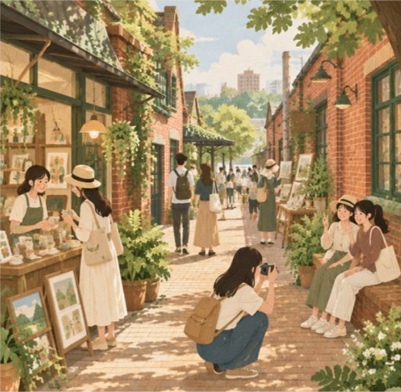
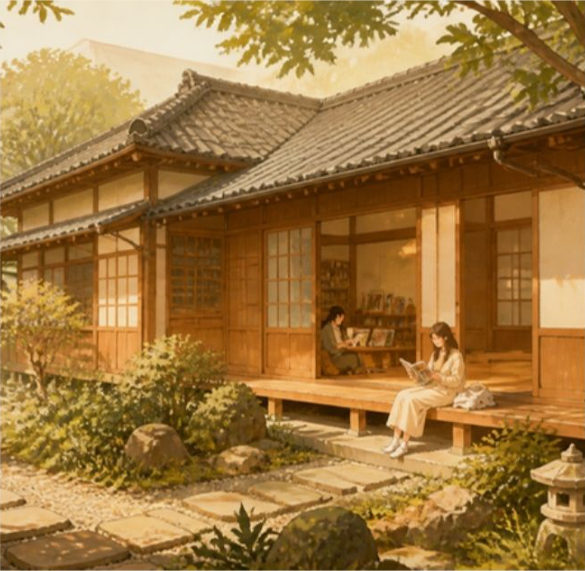
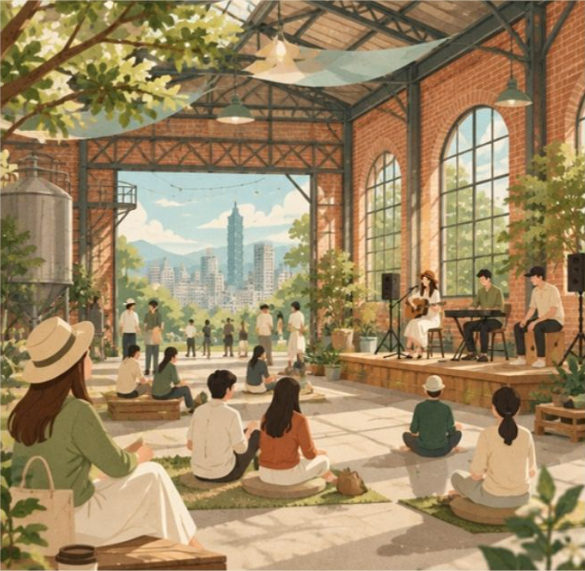
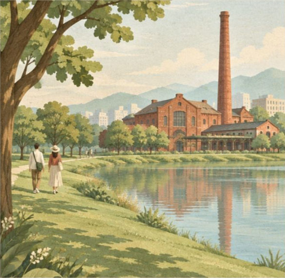
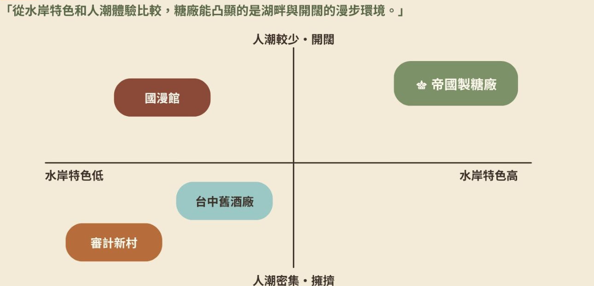

一、消費者痛點
01
下班後仍然被工作追著跑
➡ 想暫時離開工作節奏
02
下班後想遠離人潮的擁擠
➡ 有空間自在走走
03
下班後不想為休息安排行程
➡ 隨時隨地能放鬆
二、競爭者分析

審計新村
- 市場定位：文創聚落與特色商圈
- 空間形態：老宿舍店鋪與聚落巷弄
- 主要吸引力：文創市集、甜點與拍照
- 消費型態：店舖購物與飲食型態

國漫館
- 市場定位：漫畫文化與官舍活化
- 空間形態：日式官舍、庭園與步道
- 主要吸引力：漫畫展覽、閱讀與文化體驗
- 消費型態：展覽體驗與文創周邊

臺中舊酒廠
- 市場定位：文化資產展示與藝文展演
- 空間形態：展館與戶外廣場
- 主要吸引力：展覽與文化活動
- 消費型態：以觀展及活動參與為主

帝國製糖廠
- 市場定位：歷史文化與水岸休閒
- 空間形態：歷史建築、湖畔與綠地
- 主要吸引力：散步、賞景與短暫休憩
- 消費型態：戶外休閒，搭配餐飲及文創
三、SWOT 分析
S｜內部優勢
- 歷史建築、水岸與綠地相互結合
- 兼具文化、餐飲與戶外休憩功能
- 糖業歷史可作為品牌內容素材
- 場域條件契合都市放鬆需求
W｜內部劣勢
- 品牌定位及特色印象較分散
- 日常遊逛情境傳達不足
- 社群曝光仍有提升空間
- 活動人流與平日到訪連結不足
O｜外部機會
- 社群媒體提供內容傳播管道
- 在地店家與商圈合作機會
- 日常休閒與自然體驗需求
- 舊城區與周邊場域串聯
T｜外部威脅
- 周邊文化與商業休閒場域競爭
- 消費者注意力分散
- 活動檔期帶來人流波動
- 文化資產保存規範限制部分使用方式
四、STP 分析
S｜市場區隔
| 客群類型 | 核心需求 | 偏好行為 |
|---|---|---|
| 都市高壓放鬆型 | 紓解工作、生活或課業壓力 | 散步、賞景、彈性停留 |
| 歷史人文喜好型 | 認識歷史背景與地方文化 | 建築參觀、文化導覽 |
| 親子自然共樂型 | 家庭陪伴、親子互動與環境探索 | 共遊、散步、教育體驗 |
| 商圈串遊型 | 提升行程豐富性與便利性 | 景點、餐飲與商圈串聯 |
T｜目標客群：「都市高壓放鬆型」
- 需求契合：對短暫休閒及環境舒適度有明確需求。
- 場域契合：湖畔、綠地與歷史建築能支持慢步調體驗。
- 日常連結：可建立散步、休憩及平日重複到訪的使用情境。
P｜市場定位：競爭定位圖
從水岸特色和人潮體驗比較，糖廠能凸顯的是湖畔與開闊的漫步環境。
